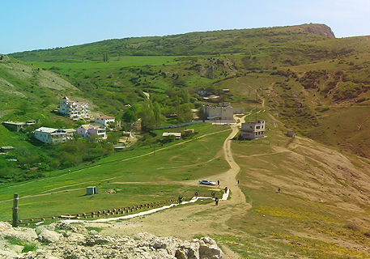

Добро пожаловать!
Поверить в то, что когда-то Балаклава была закрытым районом Севастополя, уже почти невозможно — настолько вжился в наше сознание образ популярного морского городка с романтичной набережной, круглосуточно заполненной туристами, живописными пляжами и милыми старинными улочками. Всего за несколько десятилетий Балаклава превратилась в современный курорт, предлагающий отличные возможности для отдыха на берегу моря. Одной из важных составляющих качественного и незабываемого отпуска традиционно считаются экскурсии. Интересных исторических и архитектурных памятников здесь видимо-невидимо, поэтому культурная статья вашего отдыха в Балаклаве будет очень насыщенной.

спокойный отдых
«Белый дом с орлами» – место для спокойного отдыха у моря, вдали от шумного города. Мы предлагаем Вам отдохнуть в самом сердце Балаклавы, невероятно живописном месте – балке Кефало-вриси.
прекрасная природа
Наш гостевой дом расположен у подножия крепости Чембало, вблизи от пляжей и городской набережной. В наличии все условия для Вашего комфортного времяпровождения.
живописный вид
С балконов «Белого дома с орлами» открывается живописный вид на Балаклавскую бухту и Генуэские башни. Номер люкс или жилье класса «эконом»? Мы готовы предложить вам аренду жилья.